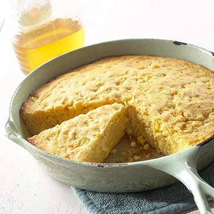

Corn-On-Corn Bread

Description
This is a recipe to make corn-on-corn bread in a cast iron skillet.
Ingredients
- 2 ears of fresh corn or 1 cup frozen whole kernel corn, thawed or 1 8.75-ounce can whole kernel corn, drained
- 1 cup white whole wheat flour, whole wheat flour or all-purpose flour
- 1 cup yellow, blue or white cornmeal
- 1/4 cup packed light brown sugar or 3 tablespoons granulated sugar
- 1 tablespoon baking powder
- 1/2 teaspoon kosher salt or salt
- 1/4 teaspoon ground cumin or chili powder
- 1 cup buttermilk, sour milk* or milk
- 2 eggs, lightly beaten
- 2 tablespoons butter or margarine, melted
- 2 tablespoons corn oil or vegetable oil
- 1 cup shredded aged white extra-sharp cheddar cheese, sharp cheddar or fontina cheese (4 ounces)
Instructions
- If husks have not been removed from corn, remove and discard. Use a vegetable brush to remove silks; rinse. Holding the ear at an angle, use a sharp knife to cut down across the tips of the kernels at two-thirds depth; do not scrape. Measure 1 cup fresh sweet corn kernels.
- Place a 9- or 10-inch cast iron skillet in hot oven with 1 tablespoon butter for 5 minutes; swirl pan to coat with butter. Working quickly to ensure the batter goes into a hot skillet, stir together flour, cornmeal, brown sugar, cumin, baking powder, and salt in a medium bowl; set aside.
- In a small bowl, whisk together the buttermilk, eggs, butter and corn oil. Add buttermilk mixture all at once to cornmeal mixture. Stir just until moistened (batter should be slightly lumpy). Stir in corn and cheese. Pour batter into prepared skillet.
- Bake in a 400 degree F oven for 20 to 25 minutes or until edges are golden brown and a wooden toothpick inserted near the center comes out clean. Cool slightly; serve warm.
* To make 1 cup sour milk, place 1 tablespoon lemon juice or vinegar in a glass measure cup. Add enough milk to make 1 cup total liquid; stir. Let the mixture stand for 5 minutes before using it in the recipe.